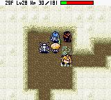
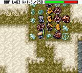

|
上级者秘传心法 ～补完篇～
◆ 奈落无盾攻略 ◆
作者：qianlc
『风来人绝对领域』版权所有，禁无断转载！
1～10F
前几层出现的怪物都比较简单，主要是多杀敌，多练级。其中つえふりわらべ能使用交换之杖；きりせんにん能使西林的体力不能自动恢复，如果多次中招还会不断减体力，一定回合后自动回复；かっとびイノツツ能使西林后退；ゲイズ能使西林慌乱，使西林自己使用道具，如果装备上盾的话就前功尽弃了，盾要捡的话还是放在保存壶中保险点；ワナニン死后会留下陷阱；しのつかい一回合能进行两次攻击；ヒツジしんかん使西林攻击力减半；パコレプキン可以穿越墙壁、可以水上移动；バットカンガル`能使同房间内的怪物进入怒状态；ウルロイド接近西林时会扔炸弹（比较讨厌的怪物之一）；まどろみつかい能使西林睡眠；ウツボカズラ能将扔给它的道具变成草（好好利用吧！不过它的攻击力会上升）；エ`テルデビル呈透明状态，吸收魔法攻击，可以吃下眼药或装备よくみえの腕轮看到；とおせんりゅう能进行两格移动；ざぜんどうし能在水上行动。
前面几层主要的任务之一就是多鉴定各种道具，其中卷物和草只要使用过一次就能识别出来，杖可以使用一次后根据现象来识别，有些壶和腕轮识别起来就比较麻烦，能得到识别卷物和识别之壶的话那就轻松多了（基本上每次都能得到），运气够好的话在使用识别卷物时有时能同时鉴定身上的所有道具，如果吃下了受到祝福的眼药的话就能识别这层捡到的所有道具，好好利用吧！说到卷物就不能不提白纸之卷物，只要正确写入任何一个卷物的假名就能成为那个卷物，在后文中会把所有的卷物的假名列出。
11～20F
ボウヤ`系怪物能射出矢，只要不和它在一直线上就没事了；きめんむしゃ死后会出现鬼武者能使别的怪物升级需小心应付，不过HP只有5，用ふきとばしの杖能一下解决；シュ`ベル能召唤LV1的怪物；デブ`チョ能对附近的西林扔石头；けいほうバエ能使睡着的怪物醒来，可以水上移动；あくまだんしゃく能变身成邻接的怪物；壶つりジジイ能偷盗西林身上的壶；ワナニンジャ死后留下陷阱；コクワガッタ`把身边的怪物往西林身上扔，也能把西林扔在附近的陷阱或怪物上；へいたいアリ能挖墙壁；にぎりへんげ能使身上的道具变成大きなおにぎり；やみかむろ吸收杖攻击；ようまかむろ吸收卷物攻击；ギャドン能吃下西林的杖使之使用次数下降；ヤギしさい使西林攻击力减半；フイウッチ`会和西林保持两格距离，可以不必理它。

21～30F
キャンベラン会偷道具往后扔，千万别扔在其它怪物身上；ドラゴン会直线向前吐火，20点伤害，别在一直线上；ゲドロ会降低剑盾的攻防，可以给武器镀金来防，本身无攻击力，只要解除装备砍它就行了；あんどんフグ能使满腹度下降30；みのせんにん使西林体力不断减少；ねむりそうりょ能是西林睡眠；タベラレル`本身呈减速状态，最弱的怪物，谁都敢欺负它，先解决它以免给别的怪物升级的机会；きゅういんちゅう能降低力量2，可用防弱腕轮来防；あくまこうしゃく能变身为身边的怪物；ミニマゼルン系能合成扔给它的道具，3级能合成4件，好好利用；みっこくバエ能使睡眠的怪物醒来。
31～40F
デブ`トン是デブ`タ系最强怪物能在很远处扔石头（很讨厌的怪物，千万别放过它）；げきとつイノシシ使前方西林后退；アイアンヘッド能２格攻击；ス`パ`ゲイズ使西林慌张；パオパおう能使用钝足之杖；ワルガマグッチ偷盗金钱后瞬移，无攻击力，被盗钱在其它地方；しゅくふくカズラ能使扔给它的道具受到祝福，利用这点便可以使出西林秘传心法之无限祝福，有了这招使以后的冒险难度大大降低了，不可不用，具体方法见后文；キャングっトド偷盗1件物品后瞬移;エビルカンガル`能使怪物进入倍速状态，见到后先解决它；コドモせんしゃ射出铁矢，把它引入通道中后只会来回走，轻松解决；ベルト`ベン随机召唤LV3怪物，先解决；ミダレウッチ`不断寻找对手，连自己人都不放过；ガイコツまおう会使用まどうの杖，使西林陷入各种状态。
41～50F
ワナニンニン死后留下陷阱；タイショウどん能反射杖攻击，如果有幸运之杖升级就变的很容易了，至少要留一次，以后有用；おばけダイコン扔毒草，怕毒消草；しょうぐん死后出现的しょうぐんゾンビ能复活附近死掉的怪物；みかわしせんにん直接攻击无效，使用封印之杖就能砍到了；しょうぐんアリ挖墙壁，倍速状态；めまわしダイコン扔混乱草或毒草；いやすぎガッパ扔出脚下的物品；トノサマどん反弹扔出的物品。
51～60F
しきべつカズラ识别仍给它的道具；しゅくふくカズラ无限祝福再次发动；ホルムデ`モン呈透明状态，发射杖攻击；ミニマゼモン能合成道具；ちびタンク发射银矢，在通道轻松解决；マスタ`チキン对其使用不幸之杖可变为チキン，见了西林只有逃命的份；ゴットドファ`ザ偷盗件物品后瞬移；イカエンペラ`使西林陷入失明状态，有よくみえの腕轮就没事；キラ`ギャザ`受到特殊攻击转为2点伤害，很讨厌的怪物；ギガヘッド３格攻击。
61～70F
だいふんかウニ会瞬移到西林身边，自爆相当大型地雷的威力；ベアボ`グ超远距离炸弹攻击；オヤジせんしゃ射出大炮，钝足状态，连砍两下就差不多了，遇到上面三种可使用ふはつの卷物使爆炸和炸弹无效；ぴ`たん倍速移动，无攻击力，死后留下おにぎり；ヒャクメまじん使同房间内的西林陷入混乱，可用防混乱腕轮；デ`モンズロック只要不靠近就不会主动攻击；オドロ降低剑盾强度；バットカンガル`能使怪物进入怒状态，和它在同层出现的都是前面几种，只要让它不停使用特技，有ふはつの卷物和防混乱腕轮就可以兵不血刃的突破这几层；エビルカンガル`能使怪物进入倍速状态；先解决；ドラゴンヘッド前方空时2格移动，能饶到身后。
71～80F
あくまぼうくん能变身为身边的怪物；パオパお`ン使用クオ`タ`の杖；ガゼルきょうこう使西林攻击力半减；あんこくかむろ扔给它的道具能透过身体（隔山打牛）；ノコギガッタ`能把怪物往西林身上扔，距离远，也能把西林扔到附近的陷阱或怪物屋中，超级讨厌的怪物；きゅうめいウサギ回复周围8格内所有角色HP50，先解决；ギャンドラ`能琢出西林的装备并去掉其中一项能力，可以水上移动；がぶのみムシ降低力量3点；はねとばカブト能移动楼梯；ノロ`ジョのはは能同时诅咒3件物品；ハイパ`ゲイズ使正前方1格的西林变成慌乱状态；メチルサタン2倍速移动、魔法反射、呈透明状态。

81～99F
グロバラン叼出道具往后扔；デビルカンガル`使怪物进入怒和倍速状态，先解决它；メガタウロス经常会心一击，不可和它肉搏；パコレプキング穿越墙壁、水上移动；にぎりもとじめ使身上的道具变成大きなおにぎり，对它扔饭团一击必杀；くねくねハニ`等级下降1级；たれこみバエ使整层中睡着的怪物醒来，可以水上移动；タベラレル`比西林更吸引怪物；スカイドラゴン同房间内自动导向吐火，30点伤害；ヘルギャザ`受到特技攻击，转为2点伤害，间接攻击无效，很无耻的怪物。
终于来到了奈落の果て的最深层，也意味着黎明前的黑暗的来临，在90F左右出现的ヘルギャザ`对所有魔法免疫，只要让它彻底消失的话，任务就完成一大半了，要完成这点就必需有根除的卷物和吸收的壶，先用吸收的壶吸收其特技，使其魔法免疫消失再扔根除的卷物以后就再也不会出现了，没有根除的卷物可以用白纸卷物来变。对付其它怪物最简单的方法就是使用大爆炸卷物，再配合吸收满祝福特技的吸收之壶的话就可以轻松突破了。要是这些都没有的话只能祈祷上天保佑楼梯离自己近点啦。
|